Chrome Dev Tools
Лучший инструмент для отладки кода
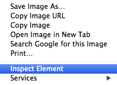
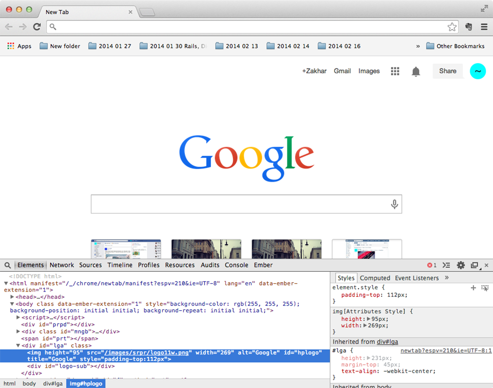
Первый HTML документ
Создайте на рабочем столе новую папку и назовите её Source,
в ней создайте новую папку и назовите её MCS1.
Откройте Sublime Text, создайте файл и напишите в нём Hello World. Сохраните файл в папку MCS1 под названием index.html
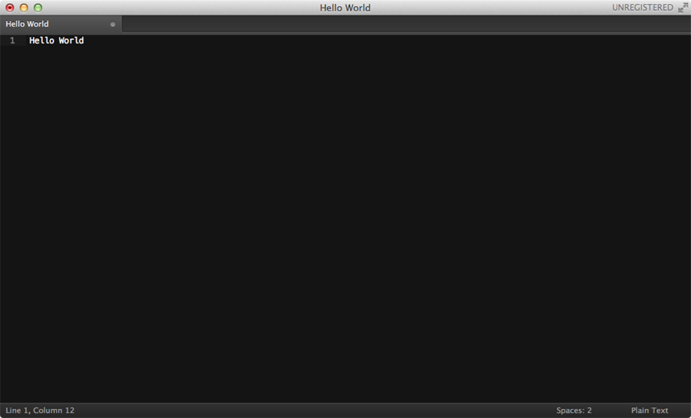
Конечный код для сравнения
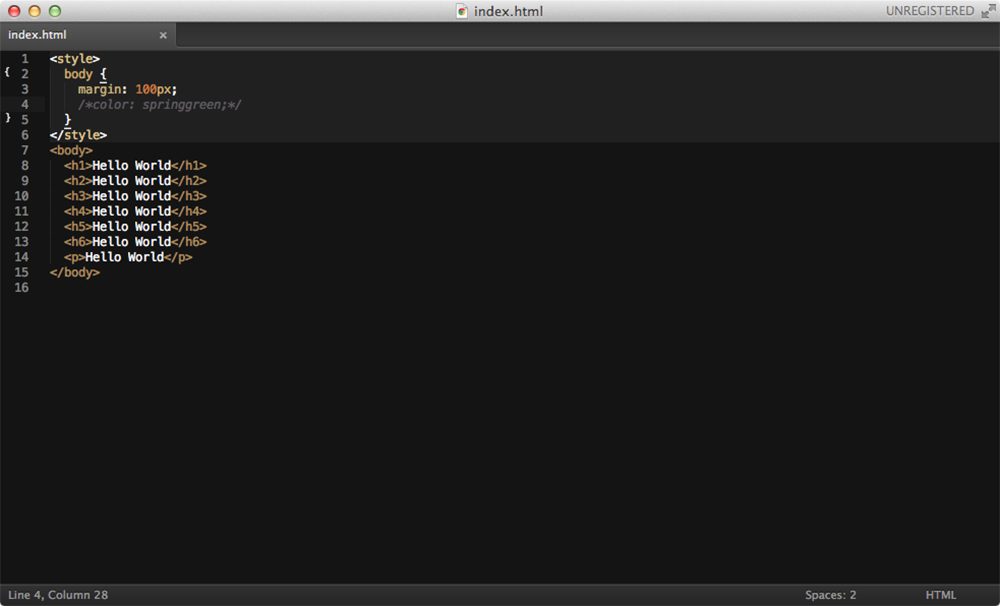
Результат в браузере
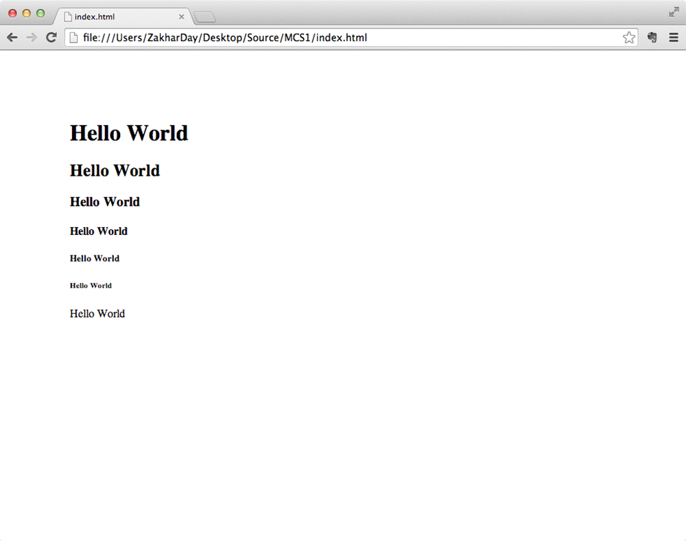
Немножко истории
1990, CERN, Швейцария
Тим Бернерс-Ли выложил в сеть первый браузер WorldWideWeb, сервер,
а также сайт, где он описал использование HTML 1.0
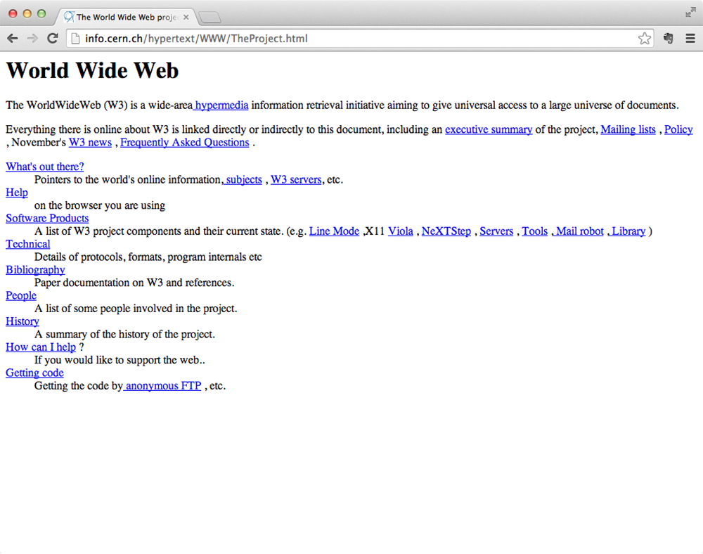
Краткая история браузеров
| 1991 |
Тим доработал WorldWideWeb и выложил его исходный код в сеть (позже был переименован в Nexus, что бы не путать браузер со всемирной сетью). |
| 1992 |
Появляются новые браузеры MidasWWW, Erwise и ViolaWWW. Начинается работа над NCSA Mosaic (или просто Mosaic). Выходит Lynx — текстовой браузер, который до сих работает, развивается и обновляется. |
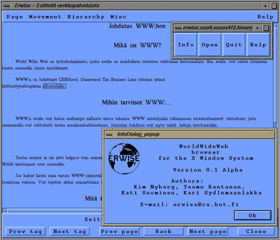
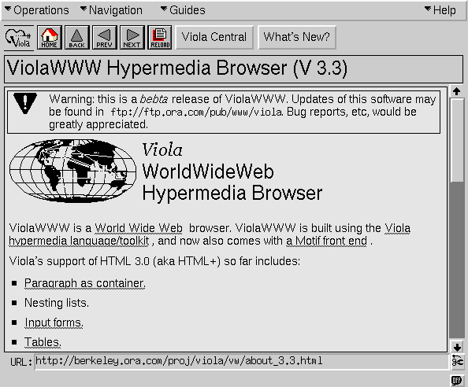
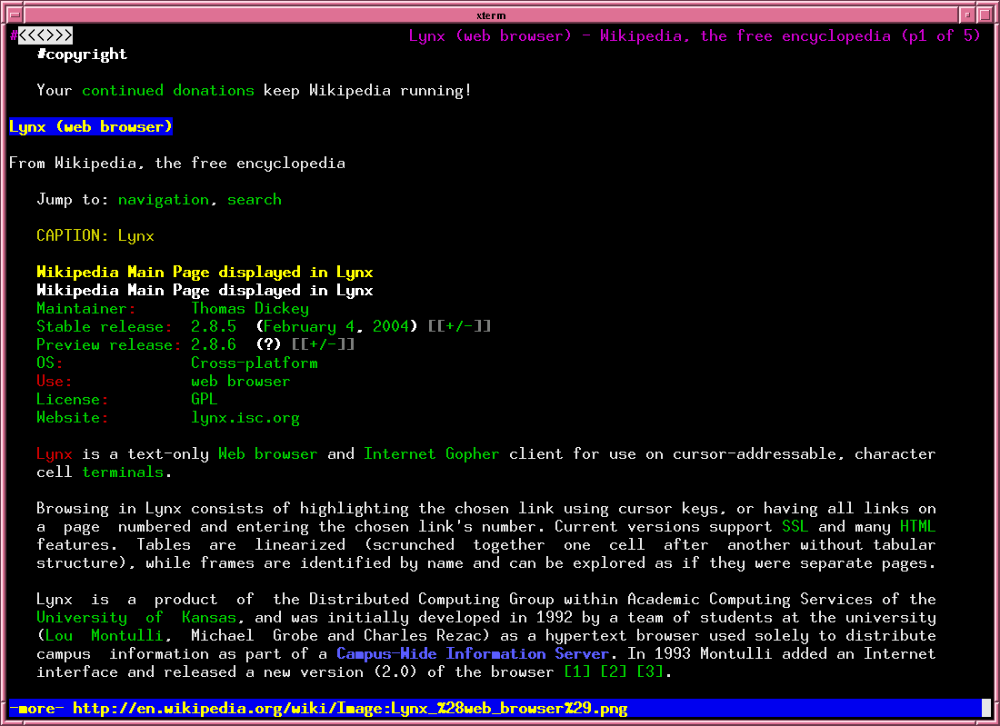
| 1993 |
Выходит браузер Mosaic. |
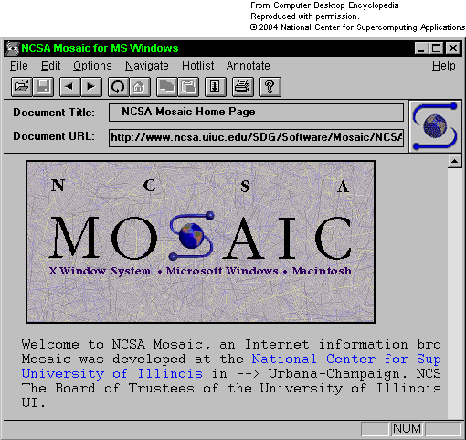
| 1994 |
Выходит Web Explorer от IBM. Тим Бернерс-Ли создаёт World Wide Web Consortium (W3C). Начиначется работа над браузером Opera. Выходит браузер Netscape Navigator. |
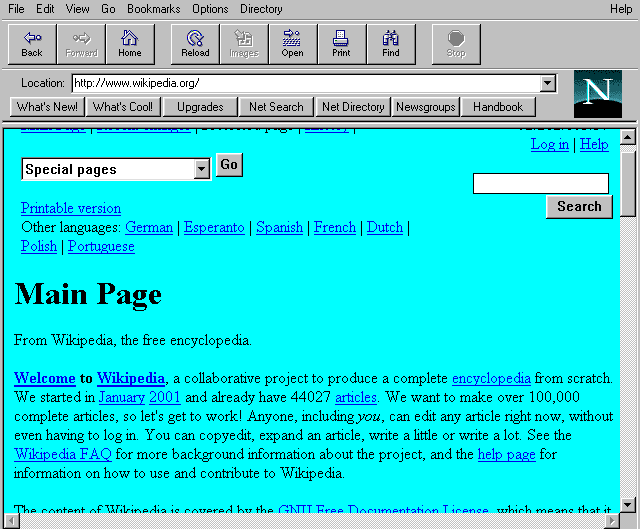
| 1995 |
Выходит Microsoft Internet Explorer. |
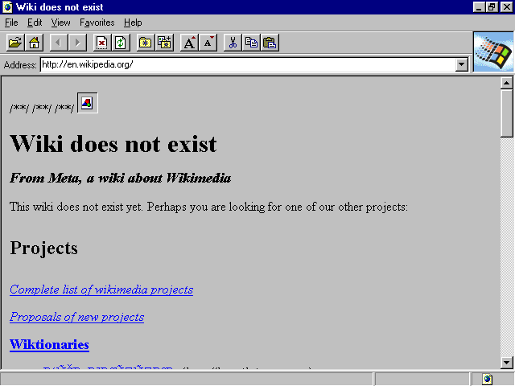
| 1996 |
Выходит браузер Opera под Microsoft Windows. Netscape Navigator на пике своей популярности. Выходит Internet Explorer под Mac OS X. |
| 1997 |
Прекращается разработка и поддержка Mosaic. Начало разработки браузерного движка Gecko. IE 4 выходит на новом движке Trident. |
| 1998 |
Начинается работа над браузером Opera под мобильные устройства. Зарождается браузерный движок WebKit (KDE's HTML layout engine (KHTML), KDE's JavaScript engine (KJS)). Создан проект Mozilla. |
| 1999 |
Начало бума доткомов. Инвесторы вкладывают огромные деньги в онлайн стартапы. |
| 2000 |
Выходит кросплатформенный браузер Opera 4.0. Opera Mobile 3.6 впервые начинает использоваться на телефонах. IE навсегда покидает Mac. |
| 2001 |
Начата работа над WebKit отдельно от KHTML и KJS. Окончание бума доткомов, большинство стартапов растратили вложенные инвестиции, так и не окупившись. |
| 2002 |
Анонсирован JavaScriptCore (компонет WebKit). Зарождение эры Web 2.0. Вышла первая версия браузера Mozilla на базе Gecko. Началась работа над браузером известным сегодня как Firefox (сначала он назывался Phoenix, потом Firebird, позже Mozilla Firefox). |
| 2003 |
Apple Safari и WebCore (компонент WebKit) был представлен Стивом Джобсом на конференции Macworld Expo. Opera Mobile 6.0 начинает поддерживать Windows Mobile. |
| 2004 |
Начинается работа над Opera Mini. Выходит первая версия Mozilla Firefox на базе Gecko. |
| 2005 |
WebKit становится общедоступным (open-source), добавлена поддержка векторной графики в формате (SVG). |
| 2006 |
Выходит Opera для Nintendo DS и Nintendo Wii (браузер назывался Internet Channel). Opera Mobile начинает поддерживать SVG. |
| 2007 |
Стив Джобс показал миру первый iPhone, который поставлялся с Mobile Safari. Позже в этом же году выходит Safari под Windows. После лимитированного распространения в Европе релизится Opera Mini. |
| 2008 |
Выходит Google Chrome, а так же open-source браузер Chromium. Оба на основе WebKit. |
| 2010 |
Выходит Firefox Mobile. Анонсирован WebKit2. |
| 2012 |
Выходит Chrome под Android и iOS. Выходит Яндекс Браузер на основе Chromium. |
| 2013 |
Анонсирован браузерный движок Blink на который в этом же году перешли Google Chrome, Chromium, Opera и все остальные браузеры использующие в своей основе Chromium. Выходит мобильная версия Яндекс Браузера под Android и iOS. |
Немножко терминов
Hypertext
Текст, который может быть нелинейным и
содержать ссылки на другие тексты.
Термин впервые упомянут Тедом Нэльсоном в 1965 году
Hypermedia
Термин, используемый для обозначения гипертекста, который может содержать в себе ещё и графику (картинки), звуковые файлы, видео, и прочие современные штучки.
"Что такое гипертекст?" на сайте W3C
HTML
HyperText Markup Language
Язык гипертекстовой разметки
HTTP
HyperText Transfer Protocol
Протокол передачи гипертекста
HTTPS
HyperText Transfer Protocol Secure
Расширение протокола HTTP, поддерживающее шифрование
HTML Tag
<html>Контент</html>
Тэги — это элементы гипертекстовой разметки. Они могут содержать внутри текст и другие элементы (тэги), а те в свою очередь другие элементы, таким образом создавая древовидную структуру документа DOM.
Источник картинки
DOM
Document Object Model
Объектная модель документа
CSS
Cascading Style Sheets
Каскадные таблицы стилей
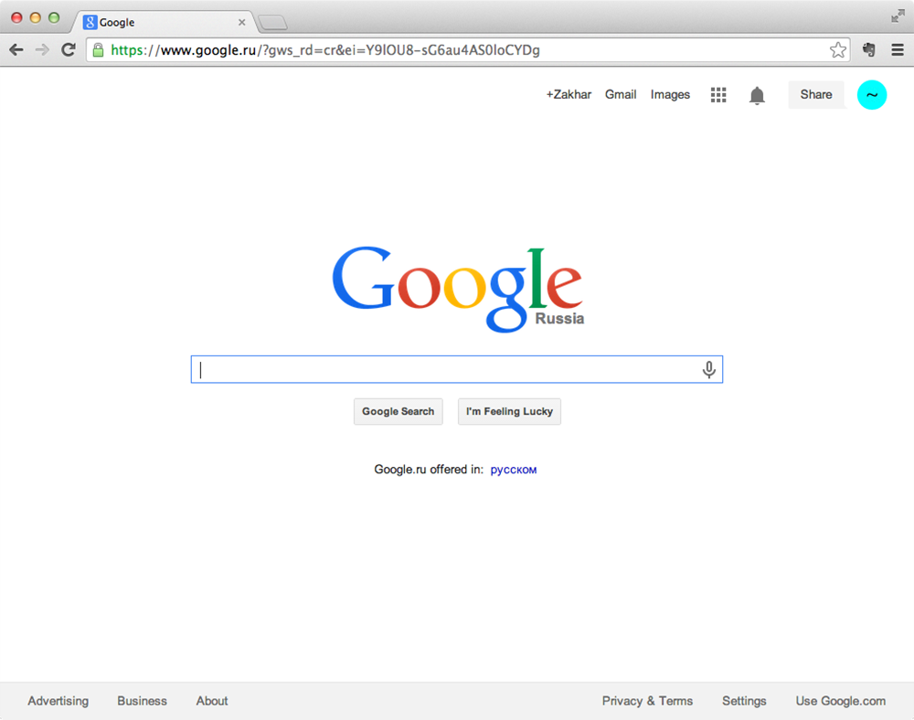
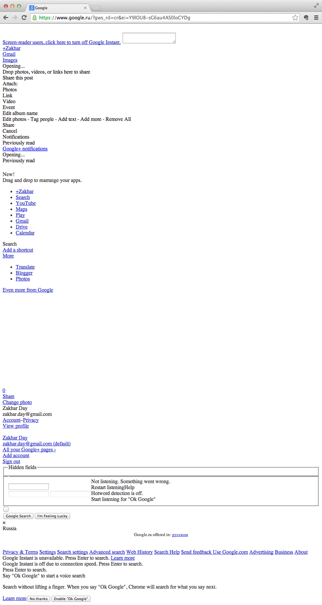
HTML5 & CSS3
Новые возможности современного веба
Это последние общепринятые версии спецификаций, которые дают нам огромные возможности по работе с контентом и пользователем. Прямо в HTML документе можно проиграть аудио и видео, рисовать и анимировать 2D и 3D на специальном слое Canvas, хранить дополнительную информацию и контент у пользователя, работать с векторной графикой (SVG), отправлять в браузер оповещения о произошедших на сервере событиях, вычислять местонахождение пользователя, объяснять поисковику какого рода контент он видит и что этот контент обозначает.
Практическая работа
Hands-on
Первая страница
Давайте приступим к написанию нашей первой страницы.
Что произошло? Мы создали файл формата HTML, который браузер умеет отображать. Несмотря на то, что мы пока не написали никакого кода, браузер знает что простой текст можно просто напечатать на экране (или проговорить).
Первый код
Давайте напишем наш первый код
Вернемся к созданному нами HTML документу, открытому в текстовом редакторе, и скопируем туда следующий код:
<!DOCTYPE html>
<html>
<head>
<meta charset="utf-8">
<title>Moscow Coding Cool</title>
</head>
<body>
<h1>Hello World</h1>
</body>
</html>
Обновим открытый в хроме таб с нашей страницей
Результат
После обновления таба, мы видим, что текст "Hello world" стал больше размером и оказался выделенным жирным, кроме того, у нашего таба появился заголовок.
Отлично, мы разметили наш первый HTML документ! При помощи разметки мы описываем структуру и природу информации.
Давайте разберемся, как размечен наш документ и что означает каждая строчка.
<!DOCTYPE html> — строчка, которая декларирует тип документа. Она сообщает браузеру, что он работает с документом HTML. Без этой строчки, некоторые браузеры могут некорректно отоброжать полученный документ<html>, <head> и <body> — вместе с доктайпом, это стандартный набор элементов, которые будут существовать для любой страницы.
<html> — это корень документа. Родитель всех остальных элементов, внутри должны находиться <head> и <body>
<head> – элемент содержащий метаданные о странице. Такими данными например могут быть заголовок документа, который потом отображается в гугле, используемая кодировка, ссылка на картинку которую отобразит фейсбук, если вставить в него ссылку на эту страницу.<body> – содержимое этого элемента браузер будет отображать.
<meta charset="utf-8"> – это тэг описывающий страницу, содержащий информацию о странице, в данном случае этот тэг сообщает браузеру и любому другому потребителю этого документа, что текст в нем содержит знаки в кодировке UTF-8. Я рекомендую всегда использовать именно такую декларацию кодировки. Важно: декларация кодировки должна быть первым ребенком элемента head.<title>Moscow Coding Cool</title> – это тэг отвечающий за заголовок страницы<h1>Hello Worldl</h1> – мы разметили текст “Hello World” обозначив его как заголовок первого уровня, heading one.
Определения
Тэг – это метка, специальный синтаксис определяющий начало или конец HTML элемента. Тэг состоит из угловых скобок "<", ">" и названия элемента (например head). Есть открывающие и закрывающие тэги. Для обозначения закрывающего тэга используется косая черта (правый слэш). То есть <html lang="en"> это тэг, также как и <title> и </head>.
Элементы - это компоненты, состовляющие вместе веб-страницу. Заголовок в названии таба - это элемент, также как и все тело документа, также как и выделенный жирным кусок текста. Элементы могут содержать другие элементы и текстовое содержимое, а также могут иметь аттрибуты.
Аттрибут — слово, описывающее какое-то свойство элемента. Аттрибуты размечаются внутри открывающего тэга через пробел от названия тэга. Большинство аттрибутов имеют значение, которое задается при помощи знака равно «=» и кавычек «""». Аттрибутов может быть больше чем один, тогда они разделяются пробелами:
<meta charset="utf-8">
<html lang="en">
<body id="home" class="awesome">
<input name="description" type="texatrea" required>
Снова посмотрим на код страницы index.html в текстовом редакторе:
<!DOCTYPE html>
<html>
<head>
<meta charset="utf-8">
<title>Moscow Coding Cool</title>
</head>
<body>
<h1>Hello World</h1>
</body>
</html>
Здесь мы видим 5 элементов, в «корне» нашего «дерева» находится элемент html, его «детьми» явлются элементы head и body. У элемента meta, есть аттрибут “charset” значение которого “utf-8”. Кроме того, у элементов head и body есть «дети», элемент title и элемент h1.
Наличие иерархии является важным качеством кода HTML — мы можем выстроить наши элементы в виде дерева:

Для описания иерархии используются слова parent (родитель) и child (ребенок).
Элементы являющиеся детьми одного элемента называют siblings (сестринскими).
Форматирование документа и комментарии
Форматирование
Существуют общепринятые правила форматирования кода — следование этим правилам сделает ваш код более читаемым и простым для понимания.
Whitespace (пробел), tab (символ табуляции), endspace (перенос строки), они помогают кодерам удобно оформлять и читать текст.
Как мы уже сказали, HTML код предствляет иерархию, поэтому правила форматирования HTML помогают увидеть эту иерархию работающему с кодом человеку
Давайте посмотрим на криво отформатированный HTML код:
<html><head><title>Bla-bla</title><body>
<h1>Whoa
</h1>
<ul><li> test</li>
</ul></body>
</html>
А теперь отформатируем этот код правильно:
<html>
<head>
<title>Bla-bla</title>
</head>
<body>
<h1>Whoa</h1>
<ul>
<li>test</li>
</ul>
</body>
</html>
Правильное форматирование кода позволяет избежать ошибок, таких как незакрытые тэги или кавычки аттрибутов или неправильного отношения элементов, к тому же Sublime Text покажет вам цветовым выделением всё ли правильно.
В зависимости от команды в которой вы будете работать или от вашего личного предпочтения для отступов используется либо знак tab, либо несколько пробелов, обычно от двух до четырех. Для контроля ширины отступов у всех нормальных текстовых редакторов есть специальная настройка.
Вот небольшой набор правил для авторства HTML документов:
Комментарии
Комментарии используются для того, чтобы оставлять пометки которые не влияют на отображение документа, они обычно описывают код
<head>
<!-- The title of the page -->
<title>Hello World</title>
</head>
<body>
<!-- main content of the page -->
…
<!-- advertising links below -->
…
</body>
Комментарии в основном используются для следующих целей:
- что-то вроде сообщения читающему код человеку — себе или кому-то другому
- для визуального разделения кода документа на части
- для того, чтобы закомментировать часть кода, так что он не будет использоваться браузером
Практика
Давайте попробуем поупражняться в написании кода. Упражнение 1
Wikipedia
Сейчас мы закодим свой вариант википедии. Откройте, пожалуйста, страницу Дэвида Бирна.
- Создайте папку
wikipedia рядом с нашей первой папкой
- Создайте новый файл в текстовом редакторе (File – New File) и сохраните его в папку wikipedia с именем
david-byrne.html. Пробелы не являются разрешенными символами для адресов страниц, поэтому мы заменяем пробелы на знак «минус». Кроме того, для адресов страниц принято использовать латинские буквы в нижнем регистре.
Скопируйте следующий код:
<!DOCTYPE html>
<html lang="en">
<head>
<meta charset="utf-8">
<title>David Byrne – Wikipedia, the free encyclopedia</title>
</head>
<body>
<header>
<h1>David Byrne</h1>
</header>
<section>
<p><strong>David Byrne</strong> (born May 14, 1952) is a Scottish-born musician permanently residing in the United States, a founding member and principal songwriter of the American New Wave band Talking Heads, active between 1975 and 1991.</p>
</section>
<section>
<h1>Contents</h1>
<ul>
<li><a href="#early-life">Early life</a></li>
<li><a href="#talking-heads">Talking Heads</a></li>
<li><a href="#interesting">Interesting facts</a></li>
</ul>
</section>
<section id="early-life">
<h1>Early life</h1>
<p>David Byrne was born in Dumbarton, Scotland, to parents Tom and Emma. He was the elder of two children. Two years later, his parents moved to Hamilton, Ontario, and then to Arbutus, Maryland, when he was 8 or 9 years old. His father worked as an electronics engineer.
Before high school, David Byrne already knew how to play the guitar, accordion, and violin. He was rejected from his middle school's choir because they claimed he was "off-key and too withdrawn". From a young age, he had a strong interest in music. His parents say that he would constantly play his phonograph from age three and he learned how to play the harmonica at age five.[5] In his journals he says, "I was a peculiar young man—borderline Asperger's, I would guess".[6][7] As revealed by Tina Weymouth in the commentary for the concert film Stop Making Sense, Byrne is left-handed but plays guitar right-handed.</p>
</section>
<section id="talking-heads">
<h1>Talking Heads</h1>
<p>He graduated from Lansdowne High School in southwest Baltimore County. Byrne started his musical career in a high school duo named Bizadi with Mark Kehoe. Their repertoire consisted mostly of songs such as "April Showers", "96 Tears", "Dancing On The Ceiling", and Frank Sinatra songs. Byrne then attended the Rhode Island School of Design (during the 1970–71 term) and the Maryland Institute College of Art (during the 1971–72 term) before dropping out and forming a band called "The Artistics" with fellow RISD student Chris Frantz.[8] The band dissolved within a year and the two moved to New York together with Frantz's girlfriend Tina Weymouth. Unable to find a bass player in New York, Frantz and Byrne persuaded Weymouth to learn to play the bass guitar.</p>
</section>
<section id="works">
<h1>Works</h1>
<h2>Solo studio albums</h2>
<ul>
<li>My Life in the Bush of Ghosts (with Brian Eno) (1981)</li>
<li>Rei Momo (1989)</li>
<li>Uh-Oh (1992)</li>
<li>David Byrne (1994)</li>
<li>Feelings (1997)</li>
<li>Look into the Eyeball (2001)</li>
<li>Grown Backwards (2004)</li>
<li>Everything That Happens Will Happen Today (with Brian Eno) (2008)</li>
<li>Love This Giant (with St. Vincent) (2012)</li>
</ul>
<h2>Talking Heads studio albums</h2>
<ul>
<li>Talking Heads: 77 (1977)</li>
<li>More Songs About Buildings and Food (1978)</li>
<li>Fear of Music (1979)</li>
<li>Remain in Light (1980)</li>
<li>Speaking in Tongues (1983)</li>
<li>Little Creatures (1985)</li>
<li>True Stories (1986)</li>
<li>Naked (1988)</li>
</ul>
</section>
</body>
</html>
Результат
Новые элементы
Мы использовали несколько новых элементов. Разберемся что каждый из них означает:
- section – этот элемент используется для выделения смыслового фрагмента документа, к этому же классу элементов относятся еще header и aside
- strong – этот элемент используется для выделения слова или части текста как более важного по смыслу, по умолчанию браузер выделит такой текст жирным
- ul – unordered list – несортированный список — элемент использующийся для обозначения списков. Интересным свойством является то, что этот элемент должен всегда сопровождаться хотя бы один «ребенком», элементом списка
- li – list item – элемент списка
- a – anchor – королева всех элементов, ссылка. У ссылки есть необходимый аттрибут — href (hypertext reference) — который указывает куда именно ведет ссылка. В нашем примере мы использовали идентификатор фрагмента документа в качестве адреса ссылки. То есть при навигации по этой ссылке браузер должен перейте к обозначенному фрагменту.
- h2 – heading 2 – заголовок второго уровня, используется для подзаголовоков, задающих тему последующих кусков информации. Вообще заголовки существуют от первого до шестого уровня:
h1, h2, h3, h4, h5 и h6
Фрагменты и ссылки
Обратите внимание на аттрибуты секций и ссылок в разделе “Contents”
…
<li><a href="#early-life">Early life</a></li>
<li><a href="#talking-heads">Talking Heads</a></li>
<li><a href="#interesting">Interesting facts</a></li>
…
<section id="early-life">
…
</section>
<section id="talking-heads">
…
</section>
<section id="works">
…
</section>
— аттрибут id позволяет выделить фрагмент документа, т.е. при помощи этого аттрибута браузер знает к какому фрагменту нужно перейти при навигации по соответствующей ссылке.
Ссылки
Мы сделали так, чтобы браузер перешел к определенному фрагменту нашей страницы. Но главное качество гипертекста — это ссылки между разными документами.
- Создайте новый файл в папке
wikipedia с именем talking-heads.html
- Отройте его и скопируйте в него следующий код, но замените значение аттрибута
href на название первого файла, а текст внутри тэга замените на такой, который подходит вашей странице по смыслу
<!DOCTYPE html>
<html>
<head>
<meta charset="utf-8">
<title>Talking Heads</title>
</head>
<body>
<a href="david-byrne.html">David Byrne</a>
</body>
</html>
- Теперь давайте вернемся к первому файлу и в нем в каком-нибудь из первых параграфов поставим ссылку на нашу новую страницу
<p><strong>David Byrne</strong> (born May 14, 1952) is a Scottish-born musician permanently residing in the United States, a founding member and principal songwriter of the American New Wave band <a href="talking-heads.html">Talking Heads</a>, active between 1975 and 1991.</p>
- Сохраните оба документа, обновите первую страницу и попробуйте проследовать по ссылкам в обоих документах
Результат
Класс! Мы почти закодили википедию!
Картинки
В Википедии довольно часто встречаются картинки, давайте добавим какое-нибудь изображение на нашу страницу.
Для вставки изображений используется тэг <img>. Но просто тэга недостаточно, нам нужно уточнить что именно за изображение мы хотим увидеть. Для этого используется аттрибут src. Его значением будет путь к изображению. Понятие «путь», path по-английски, используется постоянно и является одним из важных для понимания терминов.
Path — строка текста, содержащая адрес к какому-то ресурсу. Это может быть другой HTML документ, картинка или медиа-объект, вроде аудио или видео. Пока будет проще всего думать о путях как об адресах файлов на файловой системе компьютера, но относительно других файлов.
Вот примеры относительных путей:
talking-heads.html – путь к файлу talking-heads.html находящийся в той же папке что и ресурс, который ссылается на этот файл../index.html — путь к файлу index.html находящийся в родительской папке, один шаг «вверх» по деревеу файлов../../typography.cssimgs/header/logo.png — путь к изображению logo.png на два уровня «ниже» в файловой структуре, в папке header, в папке imgs, которая находится в одной папке с файлом, который ссылается на это изображение
- в папке wikipedia создайте папку imgs
- откройте картинку по ссылке и сохраните ее в только что созданную папку imgs
Давайте добавим новую секцию в нашу страницу на википедии сразу за первой секцией с параграфом текста:
<section>
<p><strong>David Byrne</strong> (born May 14, 1952) is a Scottish-born musician …</p>
</section>
<aside>
<img src="imgs/david-byrne.jpg">
<h1>David Byrne</h1>
</aside>
Результат
CSS
Cascading Style Sheets — каскадные таблицы стилей. Это язык описывающий оформление HTML документов.
CSS3 — последняя версия CSS, значительно расширившая возможности декорации элементов, включая возможность описывать анимации, создавать более сложную графику.
Есть несколько способов подключить стили к документу HTML.
Элемент <style>
Давайте откроем код нашей страницы и добавим новый элемент style внутри элемента head
<!DOCTYPE html>
<html lang="en">
<head>
<title>David Byrne – Wikipedia, the free encyclopedia
<meta charset="utf-8">
<style>
</style>
</head>
Напишем наш первый CSS
<style>
body {
color: red;
}
a {
color: black;
}
</style>
Результат
Разберем написанное по строчке.
<style></style> — это элемент, предназначенный для подключения стилей к странице. Стилевые правила, которые будут применены к элементам страницы описаны внутри этого элемента при помощи специального синтаксиса. Этот элемент обычно является ребенком элемента head.<style>
body {
color: red;
}
</style>
— здесь body, это селектор (selector), который, как следует из названия, выбирает элементы к которым будет применены стилевые правила.<style>
body {
color: red;
}
a {
color: black;
}
</style>
– красным выделены блоки объявлений, (declaration block), которые представляют из себя фигурные кавычки и набор из одного или более правил.Стили в отдельном файле
Обычно удобнее использовать отдельный файл, для определния стилей. Одна из главных причин — можно подключать один и тот же файл стилей к разным страницам – что в случае с сайтами, которые часто имеют общий визуальный стиль, помогает не дублировать код.
Кроме того, разделение ответственности (separation of concerns) при написании кода помогает в простоте поддержки проекта – изменение стилей страницы (CSS) не должно быть причиной изменения стуктуры и информации страницы (HTML).
К одному документу HTML можно подключать несколько стилей, кроме того, подключать можно файлы стилей хранящиеся на других серверах, что позволяет использовать библиотеки с предопределенными стилями или писать такие библиотеки самим.
В общем случае, я рекомендую писать стили в отдельном файле.
Синтаксис CSS
У CSS довольно простой синтаксис – определения стилей страницы это набор правил.
Каждое правило CSS имеет две основные части — селектор и блок объявлений.
selector, selector {
property: value;
property: value;
}
selector {
property: value;
}
Селектор, расположенный в левой части правила, определяет, на какие части документа распространяется правило.
Блок объявлений располагается в правой части правила. Он помещается в фигурные скобки, и, в свою очередь, состоит из одного или более объявлений, разделённых знаком ;. Каждое объявление представляет собой сочетание свойства CSS и значения, разделённых знаком :. Селекторы могут группироваться при помощи запятых. В таком случае описанные стили применяются к элементам, выбранным этими селекторами.
Стили по-умолчанию
Когда мы до этого работали над нашей страницей, текст, который мы разметили разными тэгами отображался по-разному — то есть несмотря на то, что мы не подключали к странице никаких стилей, разные элементы были оформлены по-разному.
Заголовок жирный и большой, элементы списков выделены горизонтальными отступами и маркерами списка, ссылки синего цвета и подчеркнуты. Всё это стили которые браузеры применяют по умолчанию к разным элементам.
Наличие стилей по-умолчанию позволяет отображать документы к которым не подключены никакие стили так, чтобы пользователю было ясно где заголовок, а где список. Однако в случае когда вы контролируете стили своей страницы, стили по-умолчанию могут мешать оформить страницу так, как хочется.
Самой главной помехой обычно являются отступы, поэтому давайте пока отключим разные отступы определенные браузером.
Скопируйте следующий код в файл стилей и вставьте так, чтобы это были первые строчки файла стилей.
* {
margin: 0;
padding: 0;
}
Результат
Селекторы
Бывают разные типы селекторов, в зависимости от того, к каким элементам они будут применены. Вот некоторые из них:
- Селекторы, которые применяются ко всем элементам определенного типа
h1 {
…
}
p {
…
}
Универсальный селектор (он выделяет все элементы)
* {
…
}
Селекторы, применяющиеся к элементам, в зависимости от их положения в дереве элементовsection p {
…
}
section li h1 {
…
}
Свойства
Пoсмотрим на несколько свойств и их возможных значений.
Сила стилей
Сделаем из википедии что-нибудь покрасивее, не меняя кода HTML
- Сохраните еще одну картинку в папку imgs — talking-heads.jpg
- Скопируйте следующий код в файл style.css
* {
margin: 0;
padding: 0;
}
body {
font-family: georgia;
font-size: 20px;
line-height: 1.5;
}
header {
background: url(imgs/talking-heads.jpg);
}
header h1 {
height: 400px;
line-height: 400px;
color: white;
font-family: helvetica, arial, sans-serif;
font-size: 144px;
text-align: center;
text-shadow: 0 0 2px black;
}
section,
aside {
width: 65%;
margin: 2em auto;
}
Результат


 Результат
Результат
{kind=link}
{kind=link}